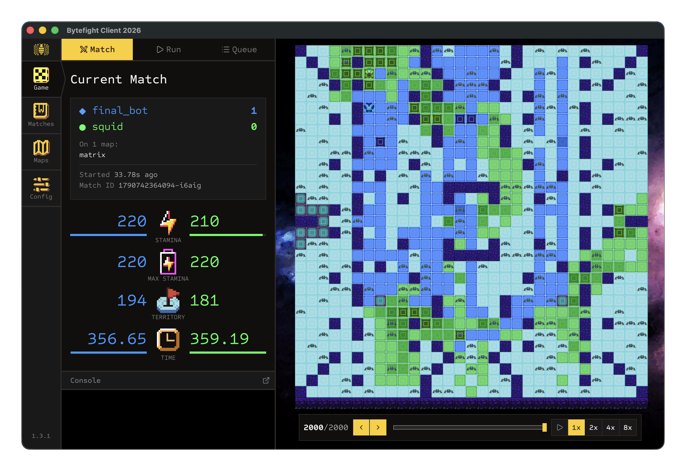

ByteFight 2026 PvP Bot

The bot in action — its “safe aggression” playstyle out-positioning and defeating a weaker opponent.
A competitive King-of-the-Hill agent for Georgia Tech’s ByteFight 2026 tournament that plays a deliberate “safe aggression” style — avoid losing collisions, take and deny hills, and strike only when it can win.
ByteFight 2026 is a turn-based territory-control game. Each turn you must move, you may paint or erase tiles, and everything is constrained by a stamina budget where extra moves cost progressively more. Collisions are decided by cell control (and otherwise by whoever initiates), and matches are won on hills controlled, then cells controlled. My bot is designed from the ground up around those exact rules.
Collision-aware safety. Before choosing any action, the bot forecasts the set of tiles the opponent can likely reach next turn, then filters its own options to avoid any move that would let the opponent collision-kill it. Moves onto our own controlled cells are treated as safe (we win collisions there); neutral or enemy cells are only safe if the opponent can’t reach them. A “comeback mode” loosens this to contest neutral hills when we’re behind.
Hill-first objectives. Each turn the bot identifies every hill on the map and locks onto a focus hill to avoid dithering between targets — committing to a partially-started hill and deliberately not re-focusing one it just captured.
Opportunistic attacks. Within the safe move set, it looks for direct collision attacks and kill moves, but only into tiles it can win — never into opponent-controlled cells where it would lose the exchange.
Anti-snowball dominance guard. If the opponent starts controlling a large share of hills, the bot switches to aggressively pathing toward enemy-held hill cells to disrupt their lead before it becomes unrecoverable.
Map-aware behavior and painting. It fingerprints maps by board size and hill signature to trigger map-specific behavior (including anti-camping rotation on maze maps), and runs a stamina-aware painting policy that prioritizes finishing focus-hill boundaries and denying enemy hill control over neutral expansion.
Pathing throughout uses a stamina-aware BFS. The bot ranked near the top of the ladder for much of the first half of the tournament. It didn’t win it outright, but it represents heavy iteration on strategy, safety logic, and map-specific tuning — and it’s some of my favorite algorithmic work.